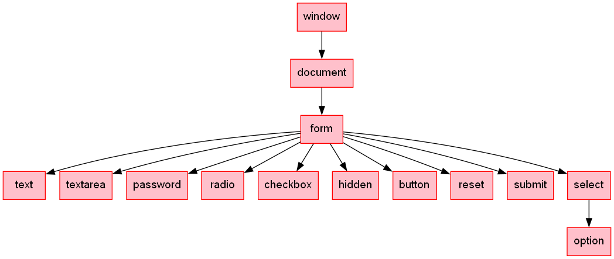
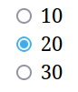
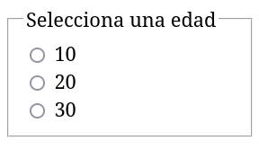

5b - Formularios y cuadros de diálogo
Contenido básico
- Cuadros de diálogo (documentación: https://developer.mozilla.org/es/docs/Web/HTML/Element/dialog)
- Formularios
- Elementos de formulario
- Validación
Cuadros de diálogo
HTML proporciona la etiqueta <dialog> que permite crear cuadros de diálogo con un código mínimo.
Código HTML: Partimos de un botón que servirá para mostrar el diálogo. Como el elemento <dialog> no tiene el atributo open no se muestra por defecto.
<button id="btnMostrar">Mostrar diálogo</button>
<dialog id="dialogo">
<form method="dialog">
<p>Una pregunta comprometida. La tortilla es mejor...</p>
<button value="concebollista">Con cebolla</button>
<button value="sincebollista">Sin cebolla</button>
</form>
</dialog>
CSS: Se usa el pseudoelemento ::backdrop para indicar las propiedades del fondo.
dialog::backdrop{ background-color: #3366; }
Javascript:
const dialogo = document.querySelector("#dialogo");
document.querySelector("#btnMostrar").addEventListener('click', ()=>{
dialogo.showModal();
});
dialogo.addEventListener('close', () => {
console.log('Valor devuelto: '+ dialogo.returnValue);
//concebollista o sincebollista
})
Código alternativo: si no queremos tener una variable para el diálogo también podríamos haber usado el target del evento:
document.querySelector("#btnMostrar").addEventListener('click', ()=>{
document.querySelector("#dialogo").showModal();
});
document.querySelector("#dialogo").addEventListener('close', (e)=>{
console.log('Valor devuelto: '+ e.target.returnValue);
})
Formularios
Los formularios son elementos HTML que permiten encapsular elementos para introducir datos por parte del usuario. En HTML además tienen una funcionalidad propia que los hace muy interesantes: pueden enviar datos a un servidor simplemente pulsando un botón de tipo submit.
Ejemplo de formulario:
<form action="saludo.php" method="get"> <input type="text" name="txtNombre" id="txtNombre"><br> <input type="number" name="txtEdad" id="txtEdad"><br> <input type="submit" value="Enviar"> </form>
Fíjate en los siguientes aspectos:
- En la propiedad action del formulario se incluye la página que va a procesar los datos del formulario
- En la propiedad method del formulario se especifica si los datos se mandarán por el método GET (el método por defecto que se usará si no se indica nada) o por el método POST. Con GET los parámetros viajan en la URL (se ven en la barra de direcciones) y con POST no.
- Existe un botón de tipo submit que al pulsarlo mandará la información a la página que procesará los datos (que aparece en el action)
- Si vamos a usarlo desde JS es buena idea añadirle un name y un id y que además coincidan.
Importante: sólo se mandarán los datos de los controles que contengan un atributo name.
Importante: un <button> dentro de un formulario se comporta como un <input type="submit">, si queremos que sea un botón que no produzca el evento submit, tendremos que indicarlo: <button type="button">
La página que procesará los datos se llamará saludo.php (el nombre del atributo action del formulario) y tendrá que recuperar el valor que el usuario haya introducido en el cuadro de texto y mostrará una respuesta como la de abajo.
<!DOCTYPE html>
<html>
<head>
<meta charset="UTF-8">
</head>
<body>
<p>Hola <?php echo $_GET['txtNombre'] ?>, aunque tienes <?php echo $_GET['txtEdad'] ?>
años, estás hecho un chaval.</p>
</body>
</html>
Ejemplo de formulario algo más completo:
<form name="frmRegistro" action="registro.php" method="post"> <label for="nombre">Nombre: </label> <input type="text" name="nombre" required> <br> <label for="lastname">Apellido: </label> <input type="text" name="apellido" required> <br> <label for="email">Email: </label> <input type="email" name="email" required> <br> <label for="password">Password: </label> <input type="password" name="password" required> <br> <input type="submit" value="Registrarse"> </form>
Nota: es posible indicar que un control que se encuentra fuera de un formulario forma parte del mismo usando el atributo form. Un control sólo puede estar asociado con un formulario.
<form id="f1"> <label>Localizador <input type="text" name="txtLoc"></label </form> ... <input type="submit" form="f1" value="Enviar">
Nota: si el formulario contiene controles <input type="file">, se debe añadir al formulario el parámetro enctype="multipart/form-data" para que se mande el contenido correctamente al servidor.
Recuperar formularios desde JS
Recuperar el objeto del formulario desde JS es posible de varias maneras.
A través del id (la manera recomendada):
let formulario = document.getElementById("frmContactar");
let formulario = document.querySelector("#frmContactar");
Por nombre de etiqueta y su posición en el array:
let primerFormulario = document.getElementsByTagName("form")[0] ;
Mediante el array document.forms:
let primerFormulario = document.forms[0]; let formulario = document.forms["frmContactar"];
Mediante el atributo name del formulario:
frmContactar ← Variable creada por el navegador
Jerarquía del DOM para formularios y controles:

Recuperar/cambiar atributos de formulario
- action
- method
- name
- target → _blank (pestaña nueva) o _self (por defecto)
- elements[ ] → Array con los elementos del formulario (input, fieldset, select,...). También funciona con frmRegistro[i], por ejemplo for(let e of frmRegistro) console.log(e)
Métodos del formulario
- reset() → Restablece los valores de los campos del formulario a su valor original
- submit() → Fuerza el envío del formulario a la página del action junto con los datos de los controles con atributo name
Nota: El envío del formulario también se lanza con los controles <button> e <input type="submit">
Elementos de los formularios
Deben tener atributo name para que se manden al servidor (y es conveniente que tengan atributo id que coincida con el name si los vamos a usar desde Javascript).
Referenciar un elemento de un formulario
document.getElementById("idDelControl")
document.getElementByName("nombreDelControl")
document.querySelector("#idDelControl")
document.querySelector("[name=nombreDelControl]")
Esta son las maneras más recomendadas para acceder a un elemento de un formulario. A continuación veremos algunas maneras alternativas que pueden ser más problemáticas.
Especialmente importante es nombrar correctamente los controles de nuestro formulario para evitar sorpresas por colisiones de nombres.
Posibles problemas
Dado este formulario hay varias otras formas de acceder a un control que son menos recomendables.
<form name="formulario">
<label>Foo
<input name="foo">
</label>
<br>
<label>Bar
<input id="bar">
</label>
</form>
Primera manera: se basa en que Internet Explorer asignaba una variable global por cada elemento que tuviera un id en lugar de mirar en su tabla de nombres (esto era parte del estándar, pero Netscape no estaba de acuerdo y no quería implementarlo). Por motivos de compatibilidad se ha terminado reproduciendo, pero puede presentar problemas. Por ejemplo si se crea una variable en algún momento que coincida con el id del control.
foo // foo is not defined bar // <input id="bar"> let bar = "El tremendo"; bar // El tremendo
Segunda manera: utilizando el nombre del formulario junto con el id del elemento o el name. De nuevo por motivos de compatibilidad con Internet Explorer, se crea una variable global con el id o name de los formularios, esto tiene el mismo problema de antes (que se declare una variable que se llame igual). También podemos referenciar el formulario como atributo de document, pero hay que tener cuidado de que el name o el id del control no coincida con un atributo del formulario (por ejemplo length, action, etc).
formulario.foo # <input name="foo"> formulario.bar # <input id="bar"> document.formulario.foo # <input name="foo"> document.formulario.bar # <input id="bar">
Nota: el formulario seguirá funcionando correctamente, su atributo method o action no cambiará, pero al intentar recuperar sus valores el navegador nos devolverá el control y no el atributo.
Tendremos que ejecutar un formulario.getAttribute("method") para recupearlo.
Tercera manera: usando la propiedad elements de un formulario. Al igual que el método anterior, puede ser problemático si tenemos un control cuyo id sea elements.
Por ejemplo, si añadimos el control de arriba a nuestro formulario, fallarán todas estas maneras:
document.forms['formulario'].elements['foo'] document.forms['formulario'].elements['bar'] document.forms['formulario'].elements.foo document.forms['formulario'].elements.bar document.forms.formulario.elements.foo document.forms.formulario.elements.bar
Nota: podríamos usar formulario.children, pero eso también nos devolverá los label y otros elementos que pueda haber, no sólo los controles.
Cuarta manera: la peor de todas. Recupera el primer formulario y el primer elemento por la posición. El principal problema es que si cambiamos de posición los formularios en la página o los elementos dentro de un formulario puede que no accedamos al control que queremos. Es el método más frágil de todos.
document.forms[0].elements[0]; # la menos recomendable de todas
Elementos de un formulario
Algunos de los elementos principales que pueden aparecer en un formulario.
Input type="text"
- value - Contiene el texto
- size - Tamaño visual del control de texto
- maxlength - Número máximo de caracteres que se puede escribir
- readOnly - Permite consultar y/o establecer el valor de solo lectura del campo de texto
- required - Obligación de rellenar el campo
- disabled - Habilita/deshabilita el uso del campo. Un campo deshabilitado no genera eventos, el usuario no puede interactuar con él, y tampoco se envía al servidor
Input type="number"
- value - Contiene el texto
- valueAsNumber - Contiene el texto
- size - Tamaño visual del control de texto
- maxlength - Número máximo de caracteres que se puede escribir
- max - Valor máximo que permite
- min - Valor mínimo que permite
- readOnly - Permite consultar y/o establecer el valor de solo lectura del campo de texto
- required - Obligación de rellenar el campo
- disabled - Habilita/deshabilita el uso del campo. Un campo deshabilitado no genera eventos, el usuario no puede interactuar con él, y tampoco se envía al servidor
Nota: se puede recuperar su valor con .valueAsNumber para que devuelva un número o NaN en lugar de .value que devuelve texto.
Input type="hidden"
Un campo oculto para el usuario pero que puede contener datos que se enviarán al servidor. Por ejemplo, se puede usar en formularios multipágina de manera que en la segunda página se guarden los datos que se introdujeron en la primera en atributos ocultos.
Input type="checkbox"
- checked - Permite recuperar/establecer el valor de marcado de la casilla de verificación (es un booleano que indica si está marcado, el valor estará en value).
Recuperar los checkboxes marcados: document.querySelectorAll("[type='checkbox']:checked")
Input type="radio"
Deben tener un atributo name común para que funcionen correctamente.

<form> <input type="radio" name="edad" value="10"> 10 <br> <input type="radio" name="edad" value="20"> 20 <br> <input type="radio" name="edad" value="20"> 30 <br> </form>
- checked - Permite recuperar/establecer qué opción está marcada.
Nota: estos controles a menudo se usan con un fieldset alrededor:
<form>
<fieldset>
<legend>Selecciona una edad</legend>
<input type="radio" name="edad" value="10"> 10 <br>
<input type="radio" name="edad" value="20"> 20 <br>
<input type="radio" name="edad" value="20"> 30 <br>
</fieldset>
</form>

Select (desplegables o drop-down menu)
<select name="provincias" id="provincias"> <option value="C">LaCoruña</option> <option value="LU">Lugo</option> <option value="OU">Ourense</option> <option value="PO">Pontevedra</option> </select>
Desde JS podemos recuperar mucha información
formulario.provincias.value // Valor seleccionado formulario.provincias.options // Array de opciones formulario.provincias.selectedIndex // Índice del option seleccionado // option seleccionado formulario.provincias.options[formulario.provincias.selectedIndex] // Texto del option seleccionado formulario.provincias.options[formulario.provincias.selectedIndex].text // Value del option seleccionado formulario.provincias.options[formulario.provincias.selectedIndex].value
Select Múltiple
<select name="provincias" id="provincias" multiple> <option value="C">LaCoruña</option> <option value="LU">Lugo</option> <option value="OU">Ourense</option> <option value="PO">Pontevedra</option> </select>
Desde JS:
formulario.provincias.selectedOptions // Array de options seleccionados
formulario.provincias.selectedOptions.length // Longitud del array de options seleccionados
formulario.provincias.selectedOptions[0].value // Valor del primer option seleccionado
let arrayElementos = formulario.elements.provincias // Array con todas las opciones disponibles
//Recorrer los options seleccionados (con el atributo selected a true)
for( x of formulario.provincias.selectedOptions){
console.log(x.value);
}
Otros controles
- <textarea>...</textarea> (usa el atributo value para recuperar el texto)
- <input type="password">
- <input type="date"> (usa el atributo valueAsDate o value para recupear el dato)
- <input type="color">
- <input type="file">
- <input id="method" type="range" min="0" max="10" step="2">

- <input type="reset">
- <input type="time">
Ejercicios
Ejercicio 1: Crea una web con un cuadro de texto y una división, de modo que en el momento que se modifique el contenido del cuadro de texto éste aparezca automáticamente en la división.
Pista: el evento que debes usar es input, pero también puedes usar el evento de teclado keyup.
Ejercicio 2: Crea una web que contenga un botón, una división y tres checkbox (mañana, tarde, noche) y al pulsar el botón se procederá así:
- comprobará que al menos una de las opciones está marcada y como máximo estarán marcadas dos.
- si todo es correcto mostrará en la división las opciones seleccionadas
- si no hay seleccionada ninguna opción o están marcadas todas, se mostrará un mensaje de error en la división
Ejercicio 3: Crea una web que contenga diez textboxes de tipo number y varios botones:
- Botón Aleatorio: cuando se pulse el botón se rellenarán con valores aleatorios todos los textboxes
- Botón Todos positivos: cuando se pulse el botón se mostrará un mensaje indicando si todos los valores son positivos
- Botón Contar positivos: al pulsar el botón se mostrará un mensaje indicando cuántos valores son positivos
Ejercicio 4: Crea una web que contenga un select con cuatro sabores de helado (vainilla, fresa, chocolate, nata) y un grupo de radio button con la nota de ese sabor (del 1 al 5 siendo 5 la mejor puntuación). Al pulsar en un botón con la etiqueta Votar, se almacenará en un array un objeto que contendrá dos valores: el sabor elegido y la puntuación elegida. Al pulsar otro botón se nos mostrará en un cuadro de diálogo cada sabor con el número de votos, su media y cuántas veces ha obtenido la puntuación máxima.
Ejercicio 5: Crea una web que contenga una división con el atributo contenteditable y que tenga entre sus reglas de estilo overflow:scroll. Por ejemplo:
<div id="divEditable" contenteditable style="overflow:scroll;width:200px;height:100px;"></div>
Ahora se podrá escribir en la división. Haz que cuando se pulse la combinación de teclas Ctrl+b el contenido de la división aparezca en negrita. Si se pulsa Ctrl+i aparecerá en cursiva y si se pulsa Ctrl+u aparecerá subrayado.
Amplíación: añade que si se pulsa Ctrl++ se aumente el tamaño de letra únicamente para esa división y con Ctrl+- se disminuya.
Validación de formularios
Referencias:
- Constraint validation
- Interesante los mensajes personalizados y la API de validación setCustomValidity(message)
- Interesante para acceder a los campos de un formulario
Muchos de los controles HTML ya incluyen alguna forma de validación. Por ejemplo, si indicamos que un input es de type="number" obtendremos un comportamiento interesante: en Chrome no nos dejará meter letras (salvo la e de exponente) y en Firefox sí nos dejará meter letras pero al recuperar el valor nos dará una cadena vacía.
Introducción a la validación de formularios
Hay varias maneras de realizar la validación de un formulario en el lado del cliente:
- Usando atributos de los propios controles
- Usando Javascript
- Combinando ambos métodos
Y en cualquier caso siempre se deben validar de nuevo los datos en el servidor. El Javascript del lado del cliente puede ser manipulado o incluso desactivado. La validación que se hace en el cliente es para evitar realizar una llamada al servidor que consume tiempo y ancho de banda con datos que son inválidos, pero la validación real se debe hacer en el lado del servidor.
Usando atributos
Una de las más sencillas es establecer en los propios controles (etiquetas <input>, <select>, etc.) las características de un dato válido. Este tipo de validación es más rápida que la que se puede realizar con Javascript, pero menos flexible.
Por ejemplo, el siguiente cuadro de texto es obligatorio que tenga un dato que tenga entre 3 y 5 caracteres (incluidos ambos):
<input type="text" minlength="3" maxlength="5" required name="txtDato1" id="txtDato1">
Otros atributos posibles para los controles son:
- required: El campo tiene que estar relleno
- minlength y maxlength: La longitud de la cadena de caracteres mínima y máxima
- min y max: El valor mínimo y máximo de un valor numérico
- type: Especifica si el dato tiene que ser un número, una dirección de correo, una fecha, etc.
- pattern: El dato debe cumplir la expresión regular que se indique, por ejemplo [A-Za-zñÑáéíóúÁÉÍÓÚ]{3} equivale a 3 letras (incluyendo ñ y vocales acentuadas).
- Si se incluye step="1" en un type="number" se indicará que sólo son válidos los números enteros (así que 3.4 será un valor inválido).
Importante: Un formulario no se enviará al servidor con el botón submit si contiene valores que sean inválidos.
Estos valores inválidos pueden recalcarse visualmente usando el pseudo-selector :invalid y los navegadores pueden incluir alguna ayuda visual. También existe el pseudoselector :valid y :out-of-range.

Ejemplo de patrones:
- pattern="[Pp]látano|[Cc]ereza" → Plátano o Cereza (también en minúsculas)
- pattern="[0-9]{4}" → Un número de 4 dígitos
- pattern="[a-z ]{8}" → Texto en minúsculas (con espacios) de 8 caracteres
- pattern="\w{3,10}" → Una única palabra con entre 3 y 10 caracteres
- pattern="\d{4}" → 4 dígitos
Nota sobre accesibilidad: si usamos patrones, deberíamos indicarlo a ser posible en el atributo title del propio control.
Ayuda para elegir un valor predeterminado:
<label for="t1">¿Cuál es tu color favorito?<abbr title="Campo obligatorio" aria-label="required">*</abbr></label> <input type="text" id="t1" name="fruit" list="listaOpciones" required pattern="[Rr]ojo|[Vv]erde|[Aa]zul|[Nn]egro"> <datalist id="listaOpciones"> <option>Rojo</option> <option>Verde</option> <option>Azul</option> <option>Negro</option> </datalist>
Usando javascript y onsubmit
El segundo método consiste en realizar una validación en Javascript antes de mandar algún dato al servidor. Puede ser necesario en algunos casos, por ejemplo si tenemos dos campos y hay que asegurarse de que ambos contengan el mismo dato (como el típico ejemplo de escribir el correo electrónico en una página de registro).
Podemos usar la manera antigua (importante el return):
<form onsubmit="return validar()" ...>
Y luego en Javascript:
function validar(){
if( ... ) return false;
return true;
}
La función validar comprobará los valores del formulario. Si son todos correctos devolverá true y en caso contrario devolverá false. Sólo se mandarán los datos al servidor si se devuelve true.
Usando javascript y un eventListener
El método más moderno consiste en asignar un id al formulario y luego en el Javascript asignar un eventListener al evento Submit.
<form id="fdatos" ...>
En el Javascript se comprueba que los datos del formulario sean correctos y si no lo son se ejecuta el preventDefault() que impedirá que se manden los datos al servidor.
document.querySelector("#fdatos").addEventListener("submit", e=>{
if( ...) e.preventDefault();
});
También podemos hacerlo más explícito llamando directamente al método submit() del formulario:
if( txtNombre.value=="" ) {
e.preventDefault();
}
else{
e.currentTarget.submit();
}
Expresiones regulares en JS
Se pueden usar para validar datos en los controles (como en el pattern de los controles) o en algunos métodos.
Por ejemplo: "hola caracola".replace(/[ac]/g,"x"); → reemplaza cada a y c por una x
Se crean usando un constructor o una sintaxis simplificada:
const regex = new RegExp("patrón");
const regex = /patrón/;
Las expresiones regulares sólo tienen dos métodos interesantes:
- test(cadena): Comprueba si un patrón coincide en una cadena y devuelve true o false.
- exec(cadena): Busca la primera coincidencia en una cadena y devuelve detalles sobre la coincidencia.
Las expresiones regulares se pueden usar algunos métodos de cadenas de caracteres. Por ejemplo si tenemos s="hola caracolaa":
- s.match(expreg): Devuelve todas las coincidencias en un array. Por ejemplo: s.match(/la+/g) → ["la", "laa"]
- s.search(expreg): Devuelve la posición de la primera coincidencia.
- s.replace(expreg): Reemplaza coincidencias con un nuevo texto.
- s.split(cadena): Divide una cadena en un arreglo utilizando un patrón como separador. Ejemplo: s.split(/la+/) → ["ho", " caraco", ""]
Existen además dos modificadores interesantes (hay más): i para ignorar diferencias entre mayúsculas y minúsculas g para que busque en toda la cadena (y pare en cuanto encuentre una ocurrencia).
const regex = /patrón/i; const regex = /patrón/g;
Ejemplo de modificadores:
const texto = "Hola hola hola"; texto.match(/hola/); // ["hola"] texto.match(/hola/i); // ["Hola"] texto.match(/hola/g); // ["hola", "hola"] texto.match(/hola/gi); // ["Hola hola hola"]
Los patrones son los habituales en otras herramientas como la orden grep de Linux:
- "Hola" – La cadena "Hola"
- . – Representa cualquier caracter
- [aeiou] – Un caracter de los que están entre corchetes
- [^aeiou] – Un caracter de los que no están entre corchetes. También se permiten rangos como [0-9] o [a-z] (nota: no incluye la ñ, ni vocales acentuadas, con diéresis, ni la ç)
- a* – 0 o N repeticiones de lo que tenga delante el *, en este caso "", "a", "aa", "aaa", ...
- a+ – 1 o N repeticiones de lo que tenga delante el +, en este caso "a", "aa", "aaa", ...
- [ab]{3} – 3 repeticiones exactas de lo que tenga delante, en este caso aaa, aab, aba, abb, baa, bab, bba y bbb.
- a? – Lo que tenga delante el ? es opcional
- () – Establece un grupo de captura, por ejemplo: a(ja)+m → "ajam", "ajajam", "ajajajam"...
- | – Un OR en una expresión regular. Por ejemplo: /^(y|s)$/i indica que serán válidas las cadenas y, Y, s y S. El resto de las cadenas serán evaluadas como incorrectas (las mayúsculas de Y y S son correctas por el modificado i.
- ^ – Representa el inicio del patrón
- $ – Representa el final del patrón
- \ – Caracter de escape que se usa para quitar significado al caracter que le sigue. Por ejemplo /\$/ es una expresión regular donde sólo será válido el caracter $
Nota: para comprobar que algo no cumple una expresión regular se puede usar con el operador de negación. Por ejemplo, la siguiente expresión !/^as$/i.test(cadena) devolverá true si la cadena no es "as".
Referencia:
- Visualizador de expresiones regulares: https://jex.im/regulex
- Visualizador de expresiones regulares: https://extendsclass.com/regex-tester.html
- Cuentificadores: https://developer.mozilla.org/es/docs/Web/JavaScript/Guide/Regular_expressions/Quantifiers
- Cheatsheet: https://developer.mozilla.org/es/docs/Web/JavaScript/Guide/Regular_expressions/Cheatsheet
Ejercicio: crea una expresión regular que indique si un código de producto es correcto. Un código de producto correcto comienza por dos números seguido de un guión y una vocal.
Ejemplos de códigos correctos: 12-e, 38-u
Ejercicio: crea una expresión regular que indique si una cadena de caracteres es un DNI válido. Es válido tanto si la letra está en mayúsculas como si no, tanto si está junto a los números como separados de ellos por un -.
Nota: no se trata de validar el caracter de control, sólo la forma del dato.
Ejercicio: se trata de crear una función que valide la contraseña de un usuario:
- Debe constar de exactamente 8 caracteres.
- El primer caracter tiene que ser una i
- Debe contener mayúsculas y minúsculas.
- La contraseña debe terminar con un dígito (pueden aparecer dígitos en otras posiciones).
Por ejemplo: iZorros1, imBecil3 e informA2 son contraseñas válidas.
Abajo puedes ver una posible solución del ejercicio. Piénsalo antes de pulsar el botón.
Pista: no necesitas hacer una única expresión regular que abarque todo, puedes crear varias.
Un par de métodos para gestionar los errores
Es muy molesto cuando un formulario muestra los errores de uno en uno (es decir, que en cuanto encuentre un error se detenga la validación del resto de los campos). Lo ideal es que se validen todos los campos y se muestren todos los errores que se hayan encontrado. Esto se puede realizar de varias maneras, pero esta es una sencilla y elegante.
Se basa en usar un array de errores donde se irán incluyendo los mensajes que se mostrarán al usuario en una división con id="divMensajesError". Si hay algún error, se impedirá el envío del formulario y se mostrarán los errores uno tras otro.
form.addEventListener('submit', function(event) {
let errores = [];
if (email.value === '') {
errores.push('Debe indicar un email.');
} else if (!isValidEmail(email.value)) {
errores.push('Debe indicar una dirección de email correcta.');
}
if (password.value === '') {
errores.push('No ha indicado un password.');
} else if (password.value.length < 8) {
errores.push('El password debe contener al menos 8 caracteres.');
}
if (errores.length > 0) {
event.preventDefault();
divMensajesError.textContent = errors.join(' ');
}
});
function isValidEmail(email) {
const emailRegex = /^[^\s@]+@[^\s@]+\.[^\s@]+$/;
return emailRegex.test(email);
}
El ejemplo de arriba basa su funcionamiento en capturar el evento submit, pero si usamos los atributos HTML para validar (ejemplo: max="5"), el evento no llegará a producirse y nuestro código JS no se ejecutará.
Usar la validación HTML
Para usar la validación del propio HTML podemos usar el código de abajo que captura el evento click del botón en lugar del submit del formulario.
Fichero HTML:
<form id="frmEnviar">
<label>Nombre<br>
<input type="text" name=" " id="txtNombre" maxlength="5" pattern="^[aeiou][0-9]+" title="El nombre debe empezar con una vocal seguida de números">
</label>
<br>
<label>Edad (valores válidos: entre 18 y 60 año)<br>
<input type="number" name="txtEdad" id="txtEdad" min="18" max="60">
</label>
<br>
<label>Dato (requerido)<br>
<input type="number" name="txtDato" id="txtDato" required>
</label>
<div id="divErrores" class="errores"></div>
<br>
<button type="button" id="btnEnviar">Enviar</button>
</form>
Fichero CSS:
input:invalid{
outline: 2px solid red;
border:0;
}
.errores{
margin-top: 1rem;
background-color: #735;
padding: 0.5rem;
border-radius: 10px;
}
.errores:empty{
display: none;
}
Fichero JS:
"use strict";
///////////////
// FUNCTIONS
/////////////////
const enviarDatos = e =>{
document.querySelector("#divErrores").innerHTML="";
const frmEnviar = document.querySelector("#frmEnviar");
let fallos = [];
for(let control of frmEnviar.elements){
if(! control.checkValidity() ){
if(control.id === "txtNombre"){
fallos.push("<p>Error, el nombre debe comenzar por una vocal seguida de números</p>");
}
else if(control.id === "txtEdad"){
fallos.push("<p>Error, la edad debe ser un número entre 18 y 60</p>");
}
else if(control.id === "txtDato"){
fallos.push("<p>Error, el dato debe estar relleno</p>");
}
}
}
document.querySelector("#divErrores").innerHTML=fallos.join("\n");
}
///////////////
// MAIN
/////////////////
const btnEnviar = document.querySelector("#btnEnviar");
btnEnviar.addEventListener("click", enviarDatos)
Ejercicios
Ejercicio 6:
Crea un formulario cuyo atributo target sea _blank y que contenga:
- Un cuadro de texto para el nickname. No podrá tener menos de 3 letras ni más de 8. El campo es obligatorio y además, no podrá comenzar por un número ni contener los siguientes caracteres: .,:;
- Dos cuadros de texto de tipo password para establecer un código PIN. Su tamaño será de 4 caracteres y todos tendrán que ser dígitos. El contenido de los dos cuadros de texto tendrán que ser el mismo. Estos campos son obligatorios también.
- Un radio button que permita seleccionar si se quiere indicar el día de nacimiento o no. Por defecto la opción seleccionada será No, pero si se selecciona Sí el usuario tendrá que rellenar los cuadros de texto de la sección de abajo.
- Una sección para establecer el día de nacimiento que conste de un cuadro de texto numérico para el día, otro para el mes y otro para el año. El día tendrá que estar entre el 1 y el 31, el mes entre el 1 y el 12 y el año tendrá estar entre 1900 y el año actual. Todos estos campos son obligatorios rellenarlos si se seleccionó la opción del Sí en el radio button de arriba.
- Añade tres checkboxes para elegir dos colores de los tres disponibles: Rojo, Verde y Azul. El usuario tendrá que marcar dos opciones obligatoriamente.
- Añade un botón de Reset y otro de Enviar.
Establece las opciones de validación de los controles en el HTML cuando sea posible.
Haz que cuando se pulse el botón de Enviar se realice la validación del formulario antes de mandar los datos al servidor y si hay problemas se muestren en un cuadro de diálogo creado con la etiqueta <dialog>.
Finalmente haz que el color de fondo del body de la página del formulario refleje los colores elegidos por el usuario (azul + rojo = morado, rojo + verde = amarillo, azul + verde = turquesa).
Ejercicio 7: Tratar con fechas es siempre unas de las cosas más tediosas en programación. En el ejemplo de arriba, por ejemplo, no se comprueba si la fecha es correcta o no (una fecha como el 31 de febrero de 2010 sería aceptada como válida con los requisitos del problema).
Crea una web que contenga un formulario con un <input type="date" name="txtFecha1" id="txtFecha1"> y
Tres <input type="number"> (uno para el día, otro para el mes y otro para el año de una segunda fecha).
Finalmente un botón de submit que cuando se pulse valide las fechas:
- Todos los campos tienen que estar rellenos
- La fecha1 debe ser correcta
- La fecha2 debe ser correcta (no vale un 31 de febrero)
- La fecha 1 debe ser anterior a la fecha2
La manera de validar fechas de manera sencilla es la siguiente:
/**
* Valida si una fecha en formato AÑO-MES-DÍA es válida
* @param {String} dateStr - Fecha en formato AÑO-MES-DÍA
* @returns Boolean
*/
function isValidDate(dateStr) {
const [year, month, day] = dateStr.split('-');
const date = new Date(year, month - 1, day); // el mes comienza a contarse en 0
return date.getFullYear() == year &&
date.getMonth() == month - 1 &&
date.getDate() == day;
}